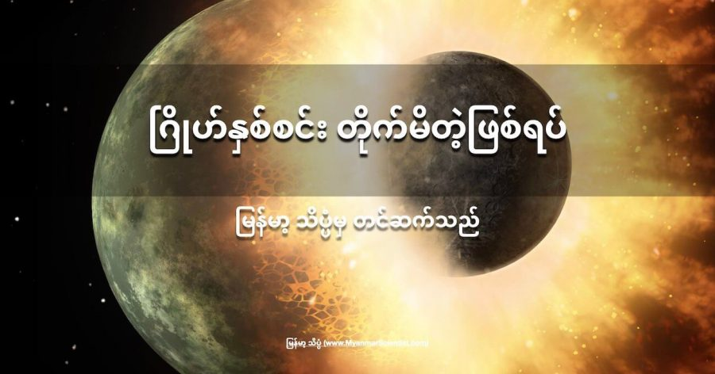

စကြာဝဠာ ထဲက ဂြိုဟ်တွေ ဖြစ်လာတဲ့ ဖြစ်စဉ်ဟာ တကယ်တော့ အချို့သူတွေ စိတ်ကူးယဉ် သလို ကဗျာဆန်ဆန် သေသပ် လှပ နေတာ မဟုတ်ပါဘူး။
ပထမဆုံး အလွန် ပူပြင်းတဲ့ ဓါတ်ငွေ့တွေ စုပြီး ကြယ် ဖြစ်လာမယ်။ ကြယ်ဖြစ်သွားပြီး ကျန်ရစ်ခဲ့တဲ့ ဓါတ်ငွေ့တွေ၊ ဖုန်မှုန့်တွေနဲ့ အခြား ဒြပ်ပစ္စည်း တွေက နေပါတ်လည်မှာ ဓါတ်ပြား ဝိုင်းကြီး တစ်ချပ် လည်နေ သလိုမျိုး နေကို လှည့်ပတ် ပြီး ကျန်ခဲ့ပါတယ်။
အချိန် ကြာလာတော့ ဒီ ဓါတ်ငွေ့ ဓါတ်ပြားချပ်ကြီးရဲ့ အချို့ နေရာတွေမှာ ဓါတ်ငွေ့တွေ ဖုန်မှုန့်တွေ စုမိ သွားပါတယ်။ ဒီနေရာ တွေဟာ နောင်တချိန် ဂြိုဟ်တွေ ဖြစ်လာမယ့် နေရာတွေ ဖြစ်လာပါတယ်။
ဒီ လို စုမိသွားတဲ့ အပိုင်းအစ တွေဟာ ငြိမ်းငြိမ်းချမ်းချမ်းနဲ့ ဂြိုဟ်တွေ ဖြစ်ခွင့် ရကြတာတော့ မဟုတ်ပါဘူး။ အချင်းချင်း တိုက်မိပြီး ပျက်စီးသွားတာတွေ၊ တစ်နေရာက တစ်နေရာကို အကြမ်းပတမ်း တွန်းထုတ် ခံရတာတွေ အစ ရှိသဖြင့် အတော်လေး ကြမ်းတမ်းတဲ့ ကာလကို ဖြတ်သန်း ကြရပါတယ်။
နက္ခတ် ပညာရှင် တွေဟာ သက်တမ်းနု တဲ့ ဂြိုဟ် နှစ်စင်း တိုက်မိတဲ့ သက်သေ အထောက် အထားတွေကို ကမ္ဘာနဲ့ အလင်းနှစ် ၉၅ နှစ်ပဲ ဝေးတဲ့ နေရာက ကြယ် အဖွဲ့အစည်း တစ်ခုထဲမှာ ရှာဖွေ တွေ့ရှိ ထားကြပါတယ်။ အခု တိုက်မိတဲ့ ဂြိုဟ်တွေ ရှိတဲ့နေဟာ သက်တမ်း အားဖြင့် နှစ် ၂၃ သန်းပဲ ရှိသေးတာမို့ ပြောရရင်တော့ အရမ်းကို အသက်နုတဲ့ နေတစင်း ဖြစ်ပါတယ်။
HD 172555 လို့ အမည်ပေးထားတဲ့ ဒီ ကြယ်ရဲ့ ပတ်ခြာလည်မှာ ထူထပ်တဲ့ ဖုန်မှုန့် တိမ်တိုက်ကြီး ရှိနေပါတယ်။ ဒီ ဖုန်မှုန့် တိမ်တိုက် ကြီးဟာ ဂြိဟ်နှစ်စင်း တိုက်မိ ကြရာက ဖြစ်ပေါ်လာတယ်လို့ နက္ခတ် ပညာရှင် တွေက တင်ပြတဲ့ စာတမ်း တစ်စောင်မှာ ရေးသား ထားပါတယ်။ ဒီ တိုက်မိတဲ့ အရှိန်ဟာ ပြင်းထန် လွန်းတာကြောင့် ဂြိုဟ် နှစ်စင်း ထဲက တစ်စင်းရဲ့ လေထုကိုတောင် ဆွဲဆုတ် လိုက်သလို ကွာထွက် သွားစေတယ် လို့ ဆိုပါတယ်။
“ဒီလို ဂြိဟ်ချင်း တိုက်မိ ရာကနေ လေထု တောင်မှ လွင့်ထွက်သွား လောက်အောင် ဖြစ်သွားရတဲ့ ဖြစ်စဉ်ကို ဒါ ပထမ ဆုံးအကြိမ် လေ့လာ တွေ့ရှိ ရတာ ဖြစ်ပါတယ်” လို့ MIT (မက်ဆာချူးဆက် နည်းပညာ တက္ကသိုလ် Massachusetts Institute of Technology) က သုတေသီ တာဂျာနာ ရှနိုက်ဒါမန်း (Tajana Schneiderman) က ပြောပါတယ်။
“လူတိုင်းက ဒီလို ဂြိုဟ်ချင်း တိုက်မိတဲ့ ဖြစ်စဉ်ကို လေ့လာချင် နေခဲ့ ကြတာပါ။ လူတိုင်းကလဲ ဒီလိုမျိုး ဖြစ်ရပ်တွေက စကြာဝဠာ ထဲမှာ ပုံမှန် ဖြစ်နေကျ ဖြစ်စဉ်လို့ ယူဆခဲ့ ကြပါတယ်။ ဒါပေမယ့် ပြဿနာက လက်တွေ့မှာ ဂြိုဟ်ချင်း တိုက်မိတဲ့ အထောက်အထားက သိပ်မတွေ့ရ ပါဘူး။ အခုတော့ ဂြိုဟ်ချင်း တိုက်မိတဲ့ ဖြစ်စဉ်တင် မကဘူး ဒီလို တိုက်မိ လို့ ဖြစ်လာတဲ့ နောက်ဆက်တွဲ ဖြစ်စဉ် ကိုပါ လေ့လာခွင့် ရကြ ပါတယ်” လို့ သူက ဆက်ပြော ပါတယ်။
ဂြိုဟ်တွေ ဖြစ်ထွန်းတဲ့ ဖြစ်စဉ်က အတော်လေး ရှုပ်ထွေးတဲ့ ဖြစ်စဉ် ဖြစ်ပါတယ်။ ကျွန်တော်တို့ သိတယ် ဆိုတာ ကလဲ ကျွန်တော်တို့ နေ အဖွဲ့အစည်း ထဲက ဂြိုဟ်တွေ နဲ့ ပါတ်သက်လို့ သိထားတဲ့ အချက်တွေနဲ့ မစ်ကီးဝေး ဂလက်ဆီ ကြီးထဲက အခြား ကြယ်တွေမှာ တွေ့ရတဲ့ သက်တမ်းနု ဂြိုဟ်တွေ ကို လေ့လာလို့ ရသလောက် ရယ်ကို ရသမျှ စုစည်းပြီး ဆက်စပ် တွေးတော မှန်းဆ ထားတာတွေပါ။
ဓါတ်ငွေ့နဲ့ ဖုန်မှုန့် တိမ်တိုက်ကြီးကနေ ကြယ် စဖြစ် ကာစမှာ ဒီ ကြယ်ရဲ့ ပတ်လည်မှာ ရှိတဲ့ ဓါတ်ငွေ့နဲ့ ဖုန်မှုန့် တွေဟာ ဓါတ်ပြားလို ချပ်ပြားကြီး ဖြစ်သွားပါတယ်။ ဒီ အထဲက ဓါတ်ငွေ့နဲ့ အခြား ဝတ္ထုတွေဟာ ဖြစ်ထွန်းကာစ ကြယ်ထဲကို စီးဝင်သွားပါတယ်။
ဒီ ဓါတ်ငွေ့ ချပ်ပြား ဝိုင်းကြီးဟာ ကြယ်ကြီး ဖြစ်ထွန်းတဲ့ ဖြစ်စဉ် မပြီးဆုံး သေးခင်မှာတင် စပြီး ပြောင်းလဲ လာပါတယ်။ ဒီ ချပ်ပြားကြီး ပေါ်မှာ ရှိတဲ့ အချို့ နေရာတွေမှာ ဓါတ်ငွေ့နဲ့ ဖုန်မှုန့်တွေ စပြီး စုမိ လာပါတယ်။ ဒီ ဖုန်မှုန့်နဲ့ ဓါတ်ငွေ့ တွေဟာ ပထမတော့ လျှပ်စစ် အဖို အမ ဓါတ် ဆွဲအားနဲ့ စုမိ သွားပါတယ်။ (ဓါတ်ငွေ့နဲ့ ဖုန်မှုန့်တွေက ပွတ်တိုက်မိတာ များတော့ လျှပ်စစ် ဓါတ်အား ဝင်လာတာ ကြောင့်ပါ)။ နောက်ပိုင်း များလာတဲ့ အခါကျတော့ ဆွဲငင်အား (Gravity) က အဓိက ဆွဲထားတာ ဖြစ်လာပါတယ်။
ဒီလို စုမိလာတဲ့ အစိုင်အခဲ အသေးလေးတွေ အချင်းချင်း တိုက်မိပြီး ပိုကြီးတဲ့ အစိုင်အခဲ တုံးကြီးတွေ ဖြစ်လာပါတယ်။ အဲ့သည်ကမှ ကြီးလာတော့ ဂြိုဟ်တွေ ဖြစ်လာတာပါ။
ဖြစ်လာတဲ့ ဂြိုဟ် တိုင်းက သက်တမ်းရင့် ဂြိုဟ်ကြီးတွေ ဖြစ်လာ ကြတာတော့ မဟုတ်ပါဘူး။ ဥပမာ နေအဖွဲ့အစည်း နုစဉ်က ဒီလိုမျိုး ဂြိုဟ်တစ်စင်းဟာ ကမ္ဘာနဲ့ တိုက်မိပြီး လ ဖြစ်လာတယ်လို့ ယူဆ ကြပါတယ်။
နောက်ပြီး သိပ္ပံ ပညာရှင် တွေက ဂြိုဟ် အများစုဟာ သူတို့ မွေးဖွားရာ နေရာတွေမှာ အမြဲ မနေကြပဲ အခြား နေရာ တွေကို ရွှေ့ပြောင်း ရောက်ရှိ သွားကြတယ်လို့ ယူဆကြ ပါတယ်။ သူတို့ မွေးဖွားရာ ပတ်လမ်းကနေ အခြား ဒီ့ထက် မိခင်ကြယ်နဲ့ ပိုဝေးတဲ့ (သို့) ပိုနီးတဲ့ ပတ်လမ်း တစ်နေရာကို ပြောင်းရွှေ့ ရောက်ရှိ သွားပြီးမှ အခြေ ကျလာကြတယ်လို့ ယူဆ ကြပါတယ်။ ဒီ လို ဂြိုဟ်တွေ နေရာ ရွှေ့ပြောင်းတဲ့ ဖြစ်စဉ် ကာလမှာလဲ ဂြိုဟ် အချင်းချင်း တိုက်မိ နိုင်ပါသေးတယ်။
ဒီ အချက် တွေကြောင့် သိပ္ပံ ပညာရှင် တွေက ဂြိုဟ် ချင်း တိုက်မိတဲ့ ဖြစ်စဉ် တွေဟာ ကြယ် အဖွဲ့ အစည်းတွေ စတင် ဖြစ်ထွန်းစ ကာလတွေမှာ ပုံမှန် ဖြစ်နေကျ ဖြစ်စဉ်လို့ ယူဆ ကြပါတယ်။ နောက်ပြီး ဒီလို တိုက်မိ ကြတာကြောင့်လဲ ဂြိုဟ်တွေရဲ့ ဖွဲ့ဖြိုးမှုကို ပိုပြီး အကျိုး ဖြစ်ထွန်း စေနိုင်တယ် လို့ အချို့က ယူဆ ကြပါတယ်။
အခု လေ့လာ တွေ့ရှိ ရတဲ့ HD 172555 ကြယ်ဟာ နဂို စပြီး ရှာဖွေ တွေ့ရှိစ ကာလ ကတဲက နဲနဲ ထူးဆန်း နေတာကို ပညာရှင်တွေ သတိ ထားမိ ခဲ့ကြတာပါ။ သူ့ကို ပတ်နေတဲ့ ဓါတ်ငွေ့တွေရဲ့ ဖွဲ့စည်းပုံ (ပါဝင်တဲ့ ဒြပ်တွေ) ကလဲ ပုံမှန် တွေ့နေကြ ကြယ်တွေနဲ့ မတူပါဘူး။ ဒီ ဓါတ်ငွေ့ တိမ်တိုက် ထဲက ဖုန်မှုန့်တွေရဲ့ အရွယ်က လဲ ပုံမှန်ထက် သေးနေ ပြန်ပါသေးတယ်။ ပုံမှန် ကြယ်တွေရဲ့ ပတ်ခြာလည်မှာ တွေ့ရလေ့ မရှိတဲ့ ဆီလီကာ တို့၊ ဆိုဒီယမ် မိုနောက်ဆိုဒ် တို့လို ဓါတ်မျိုးတွေကိုလဲ အမြောက်အများ တွေ့ရပါ သေးတယ်။
အရင် ကတဲက ပညာရှင် တွေက ဒီ ဓါတ်ငွေ့တွေဟာ ပြင်းထန်တဲ့ အရှိန်အဟုန် နဲ့ တိုက်မိပြီး ဖြစ်လာတဲ့ ဓါတ်ငွေ့တွေ လို့ ယူဆခဲ့ ကြပါတယ်။ (ဘာဝတ္ထုနဲ့ ဘာ ဝတ္ထု တိုက်မိလဲ ဆိုတာတော့ မသိခဲ့ ကြပါဘူး)။ ဒါ့ကြောင့် ရှနိုက်ဒါမန်း နဲ့ အဖွဲ့ဟာ ဒီ ကြယ်ရဲ့ ပတ်လည်က ဓါတ်ငွေ့တွေ ထဲက ကာဗွန်မို နောက်ဆိုက် (CO) ဓါတ်ငွေ့တွေကို ရှာဖွေ ထောက်လှမ်း ခဲ့ပါတယ်။
ဒီနေရာမှာ ဘာလို့ ကာဗွန်မိုနောက်ဆိုက် ကို ရှာတာလဲ ဆိုပြီး မေးစရာ ရှိပါတယ်။ ကြယ်တွေ ဂြိုဟ်တွေ ပျက်စီးပြီး ကျန်ခဲ့တဲ့ အကြွင်းအကျန် အပျက် အစီး တွေ ကြားထဲမှာ CO ဓါတ်ငွေ့က အရောင် အတောက်ဆုံးပါ။ ဒါ့ကြောင့် သူ့ကို ရှာရတာက အခြား ဓါတ်ငွေ့တွေကို ရှာရတာထက် ပိုလွယ်ပါတယ်။ ဒါ့ကြောင့်လဲ အပျက်အစီး တွေကို လေ့လာ သူတွေက CO ဓါတ်ငွေ့ကို အရင်ဆုံး ရှာဖွေ ကြတာ ဖြစ်ပါတယ်။
ဒီ ကြယ်ရဲ့ ပါတ်လည်က ဓါတ်ငွေ့တွေကို ခွဲခြမ်း စိတ်ဖြာ ကြည့်လိုက်တော့ CO ဓါတ်ငွေ့တွေ အမြောက်အများ ရှာတွေ့ ခဲ့ပါတယ်။ နောက်ပြီး ဒီ ဓါတ်ငွေ့တွေ ကလဲ နေနဲ့ သိပ်မဝေးတဲ့ အရပ်ဒေသ တွေမှာ တွေ့ရတာပါ။ ထုံးစံဆို ဒီလောက် နီးတဲ အရပ်ဒေသမှာ ဒြပ်ပေါင်းတွေ ဟာ နေရဲ့ ဓါတ်ရောင်ခြည်ကြောင့် ပျက်စီးသွားဖို့ပဲ ရှိပါတယ်။ (ဆိုလိုတာက CO က ဓါတ်ရောင်ခြည်ကြောင့် ကာဗွန် နဲ့ အောက်ဆီဂျင် အဖြစ် ပြိုကွဲသွားမယ်လို့ ဆိုလိုတာပါ)။ ဒီလို ပုံမှန် မဟုတ်ပဲ အမြောက် အများ မပြိုကွဲပဲ ကျန်နေတာ ဘာကြောင့်လဲ ဆိုတာ အဖြေရှုာဖို့ လိုလာပါတယ်။
ဒီ အဖြေရဖို့ ဖြစ်နိုင်တဲ့ အဖြစ်အပျက် အမျိးမျိုးကို ကွန်ပြူတာနဲ့ ဖန်တီးကြည့် ကြပါတယ်။ သူတို့ရဲ့ ဖန်တီးချက် အရ အဖြစ်နိုင်ဆုံး ကတော့ ဂြိုဟ်ကြီး နှစ်စင်း တိုက်မိလို့ ဖြစ်လာတာ ပဲ ဖြစ်ပါတယ်။ သူတို့ရဲ့ ကွန်ပြူတာ ဖန်တီးချက် အရ ဘယ်အချိန်က တိုက်မိခဲ့လဲ၊ ဘယ်လို တိုက်မိခဲ့လဲ ဆိုတာအထိ ပြန်ပြီး တွက်ချက် ယူနိုင် ခဲ့ပါတယ်။
တွက်ချက် မှု အရ လွန်ခဲ့တဲ့ နှစ် ၂၀၀,၀၀၀ လောက်က ကမ္ဘာလောက် အရွယ် ရှိတဲ့ ဂြိုဟ်တစ်စင်းကို အခြား သူ့ထက် ငယ်တဲ့ ဂြိုဟ်ငယ် တစ်စင်းက ဝင်တိုက်မိ ခဲ့တယ် လို့ ဆိုပါတယ်။ ဝင်တိုက် မိတဲ့ အရှိန်က တစ်စက္ကန့်ကို ၁၀ ကီလိုမီတာ (တစ်နာရီ ၂၂,၀၀၀ မိုင်) နှုန်းနဲ့ ဝင်ဆောင့်မိ ခဲ့တာပါ။
ဒီ ဝင်ဆောင့်မိ မှုက ပြင်းထန်လွန်းလို့ အတိုက်ခံ ရတဲ့ ဂြိုဟ်ရဲ့ လေထုဟာ လွင့်ထွက်သွားခဲ့တယ် လို့ ဆိုပါတယ်။ အားလုံး မဟုတ်တောင် ဒီဂြိုဟ်ရဲ့ လေထုရဲ့ အစိတ်အပိုင်း အတော်များများ အာကာသ ထဲကို ဆုံးရှုံး သွားခဲ့ ရပါတယ်။ ဒါ့ကြောင့်လဲ ဒီ ဓါတ်ငွေ့ တိမ်တိုက်ထဲမှာ CO ဓါတ်ငွေ့တင် မက ဆီလီကာ ဓါတ်ကိုလဲ အများအပြား တွေ့ရတာ ဖြစ်ပါတယ်။
“ဖြစ်နိုင်တဲ့ အဖြစ်အပျက် တွေအားလုံး ထဲမှာ ဒီ ဂြိုဟ်ချင်း ဝင်ဆောင့်မိတဲ့ ဖြစ်စဉ် တစ်ခုကပဲ လက်တွေ့ ထောက်လှမ်း ရရှိတဲ့ သိပ္ပံ အချက်အလက် တွေနဲ့ ကိုက်ညီမှု ရှိပါတယ်” လို့ ဒီ တွေ့ရှိချက်ကို တင်ပြခဲ့တဲ့ ရှနိုက်ဒါမန်း က ပြောပါတယ်။
အခု တွေ့ရှိ ချက်ဟာ အခြား ကြယ် အဖွဲ့အစည်း တွေမှာလဲ ဂြိုဟ်တွေ တိုက်မိခဲ့မှု ရှိမရှိ၊ ရှိခဲ့လျင် ဘယ်အချိန် က ဖြစ်ခဲ့တာလဲ ဆိုတာတွေကို လေ့လာဖို့ အထောက် အကူ ဖြစ်စေမှာ ဖြစ်ပါတယ်။ အကယ်လို့ အခြား ကြယ်တစ်စင်းစင်းရဲ့ ဝန်းကျင်မှာ ကာဗွန်မို နောက်ဆိုဒ် ဓါတ်ငွေ့တွေ အများအပြား တွေ့ခဲ့လျှင် ဒါဟာ တချိန်က ဂြိုဟ်ကြီးတွေ တိုက်မိခဲ့ ကြတဲ့ အဖြစ်အပျက်ရဲ့ အကြွင်း အကျန်တွေ ဆိုတာကို သိနိုင်မှာ ဖြစ်ပါတယ်။
ဒီ လေ့လာချက်တွေ ကနေ ဂြိုဟ်တွေ ဘယ်လို ဖြစ်လာလဲ ဆိုတဲ့ မေးခွန်းကို တိတိ ကျကျ အဖြေ ပေးနိုင်ဖို့ နီးစပ်လာမှာ ဖြစ်ပါတယ်။
ဒီ သုတေသန တွေ့ရှိချက် ကို Nature သုတေသန ဂျာနယ်မှာ တင်ပြထားတာ ဖြစ်ပါတယ်။
Reference: Two Planets Smashed Together So Hard One of Them Lost Its Atmosphere | Science Alert
ဂြိုဟ်နှစ်စင်း တိုက်မိတဲ့ဖြစ်စဉ်

October 26, 2021
Other Posts
- နေနှစ်စင်း ထွက်တဲ့ ဂြိုဟ်တွေပေါ်မှာလဲ သက်ရှိတွေ ရှိနိုင်တယ်
- James Webb ရဲ့ ပထမဆုံးပုံ ထုတ်ပြန်
- ကမ္ဘာ့အလယ်ဗဟို အူတိုင်ကိုဖြတ်ပြီး ပြုတ်ကျဖို့ အချိန်ဘယ်လောက် ကြာမလဲ
- ကမ္ဘာ့ဗဟိုအူတိုင် အပူချိန် ပိုမိုလျှင်မြန်စွာ အေးလာနေ
- AI နဲ့ အမှုတွေ တရားရုံးတင်ဖို့ တရုတ်ပညာရှင်များ စမ်းသပ်
- အမျိုးသားများ၏ ဝိုင်ခရိုမိုဆုမ်း မျိုးတုန်း ပျောက်ကွယ်မည့် အန္တရာယ် ရှိနေ
- Nibiru ဂြိုဟ် တကယ် ရှိသလား
- နေရဲ့သက်တမ်း ကုန်သွားရင် ဘာဖြစ်လာမလဲ
- သံရည်ပူတွေ မိုးရွာကျနေတဲ့ ဂြိုလ်
- ဖိုင်းမန်း ပြောတဲ့ သိပ္ပံနည်းစနစ် ဆိုတာ